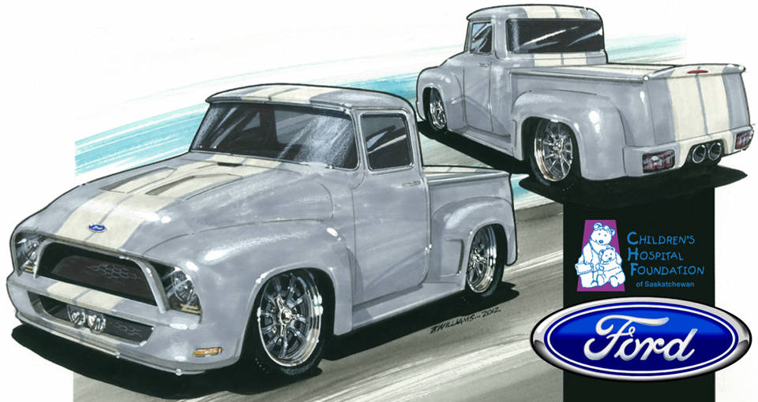

About this project
The Dream Begins
So how does a simple idea such as a team building exercise to build a truck end up with what you see here?
For a few years Tom Foster, President and General Manager, of Industrial Machine & Manufacturing Ltd. (IMM) in Saskatoon, Saskatchewan, Canada, would occasionally bring up the idea of building a project truck as a company team building exercise. It was IMM’s 55th anniversary, when would be a better time? The shop was full of talented crafts men and women and many were automotive enthusiasts - should be a piece of cake - a simple straight forward truck rebuild. The seed was planted in true prairie form and the idea was allowed to grow.
Some time passed and the fourth new member of the Foster family arrives. But this young ladies first 14 days were not without its challenges, back and forth to the hospital and finally all is well. Reflecting on the time spent in the hospital Tom has a revelation to possibly use that truck idea to raise some funds to donate to the Saskatoon Children’s Hospital Foundation to help build a long awaited Children’s Hospital in Saskatoon. To give back, help in some way to provide a better future for the kids and their families when they are also faced with some of these life threatening challenges. “We could build the truck and then possibly raffle it off and donate the truck and its proceeds” or something to that effect. “I’ll buy the truck and pay for the parts and we can get volunteers from the shop to build it, sell tickets on it and donate the money raised” It was the companies 55th year in business, tie the anniversary to the fund raising project, lets raise $55,000. Perfect!
A bit more time passed without much further thought, then the Christmas break. Dave Pihach, now doing some reflecting of his own had an idea. He would fly to Phoenix and attend the Barrett Jackson, and Russo and Steele Auctions to get an insight into what vehicle we should build and the calibre this build must be to raise a LOT of money, more than just $55,000. Not with raffle tickets but possibly auction it of at an event of this calibre, he wondered how much money we could raise then?
Well, Tom went for the idea, Dave bought a plane ticket and off to Phoenix he went. His good friends and mentors for the week, Larry and Brenda Pederson, of Phoenix Arizona took took him in. Better hosts you will not find; and Larry a car collector, a builder, and a great wealth of knowledge started me on my quest as soon as he picked me up at the airport. With Barrett tickets already in his hand off we went straight to the show; we meet Don Miller, another Saskatoon car guy and good friend at the door, the adventure began.
If you are a car nut or even just want to try something different on your next trip away, you have to attend an event like the Barrett Jackson Auction, you’ll be blown away. There was no turning back now, this stuff is infectious, there is no way we can now build a simple project vehicle. We saw hundreds of cars being sold over the next four days, Larry pointed out things to look for in a quality vehicle and what you have to do to build a desirable vehicle. Enough about the trip, Dave accomplished what he set out to do, he had his recommendation.
The choice was made, a 1956 F100 Ford truck, street rod style, independent front suspension, a modern small block, etc., now to try and find a good one at a reasonable price. And with that decision, why can’t we try and raise $150,000 with the truck? It took about 2 weeks of searching and there it was, in Washington, the perfect truck for the project. The truck was solid, no apparent rust issues and all the parts were there and... wouldn’t you know it, the bidding just closed. Lucky for us the reserve price wasn’t met and it was still for sale. Dave called the dealership that owned the truck, Kompact Kar Korner in Lynnwood, Washington and bought the truck sight unseen. Now all we need to do is get it shipped, Kompact Kar Korner arranged that for us and soon it was on it's way.
The truck arrived safe and sound, it started, a good sign, and we drove it out of the trailer and into the shop even better. It turned out to be everything they said it would be, what a great start!
Reality Sets In
The truck has landed, its April 2010, and of course the shops work load goes through the roof. Everyone is busy, and the truck gets moved from here to there and project is stalled.
More time passes and another Saskatchewan winter is upon us and another Christmas break revelation. Why not take this project even further, why not merge this 1956 Truck with a brand new Ford Shelby Mustang, not just a Mustang but a Shelby? After all, the Mustang II has been the staple of street rods since the early 70’s so the blending of the old with the new just may work. This of course would take a fairly straight forward project in completely new direction and now also into a project that will now require some sponsorship support.
The scope of the project has once again changed, now the third version is being proposed, Dave said he would take the blame, and with this new change we have long since missed building this truck to roll out on the companies anniversary. Reality has set in, there is lot more time being spent dreaming and not enough building, will this thing ever get built...
Inspiration
We needed to get reinspired, this project needs a name, it needs a rendering of the final look, it needs sponsors to help pay for it, and we have to get the truck built. The vehicle rendering was tasked to a local artist Bruce Williams. Bruce has been doing car inspired art for a long time, he has the ability to put on paper others visions and, you can see, he’s good at it. Bruce’s name will be mentioned time and time again as we move through this build. His artistic influence will be a part of history.
We held a name-the-project contest at IMM, and the winner "Wheels of Dreams”. The inspiration we needed, t-shirts were printed, everyone at the shop got one and we had momentum once again.
Sponsorship
So back to that Shelby idea. How does one get their hands on a new Shelby, and now it would be a 2012 version, without actually buying one? A call was made to our Philanthropy rep at the Children’s Hospital Foundation, Lisa Sands. Lisa was instrumental in getting this project registered with the foundation and provided us with the criteria to follow. Dave needed a face to face meeting with Vaughn Wyant, a local Ford Dealership owner, he needed to pitch him on the idea of using the Shelby and working with him to get a car from Ford.
After hearing Dave's pitch; Vaughn, almost without pause, jumped in. His passion and support of the Hospital was obvious. Without wasting any time he set up another meeting with the IMM team and a team of his guys to see how feasible the plan was and how we were going to secure the car. -Wow this might actually happen-. A few more meetings and a few more months flew by and just when it seemed like we may have to regroup and go back to a less ambitious plan the call came, we were going to get the support from Ford that we needed. The Ford Dealers Association of Saskatchewan were all going to be part of this sponsorship, after all the Hospital is a Saskatchewan Project.
Now What
So we have a truck, we have a car, we have a plan, we have a charity, we have a major sponsor and we are stalled. At this point it would seem natural to ask what else is needed, a consultant. Every industry uses them so why not this project? Vaughn and Dave agree to call a local car enthusiast Wayne Halabura. Wayne, a local businessman, has been building hot rods for decades and knows what it takes to build the quality of vehicle that will raise big dollars. Wayne sold two of his own 1932 Fords at the Barrett Jackson Auction in Scottsdale, he’s the guy we need. The call was made and we have another, without hesitation, member of the team. We set up another meeting to see what Wayne’s thoughts are on the direction we need to go, Wayne brings with him Bruce Williams, good news to know that his faith in Bruce’s artistic abilities are the same. He also brings with him a young man, Byron Theissen, local metal crafting talent that Dave met a few years back at his shop Creative Concepts & Restorations. So where’s Wayne going with this? His suggestion, hire Byron to build the truck, work with Bruce to create a concept the reflects the merging of the F100 and the Shelby, and hit the streets to raise the money to pay for it all. We all agreed, a full time builder will certainly get the project finished.
Byron and Bruce went to work on the design. Bruce left the dealership showroom with the idea “when I saw the Shelby in the showroom I knew exactly what we needed to build” and what resulted is what you see here.
The project has evolved a lot in the last two years, the end result has never wavered, to raise a lot of money for a local charity and a very worthwhile cause. There was a point when the scope of the project changed most notably who was going to build the truck. The employees of IMM will still be involved, they will do what they are good at. Computer aided design (CAD), computer aided machining ( CAM ), CNC Machining, and a shop full of MIG, TIG, and welding equipment.
So here we are, the build is finally underway, additional sponsorship is starting to roll in, we have a build team, we know what the end result is going to look like, and we have a deadline of October 2013. It took over two years to get here, but it was worth it. This truck is going to do great things, its going to be famous, and is going to raise a lot more than $150,000. Follow along as the Wheels of Dreams moves through its build, as it raises money for the Kids, and as it makes history.
How You Can Help!
You can be part of this history as well! Simply click here to donate! Every single dollar you pledge will go directly to the Childrens Hospital Foundation, directly to a great cause